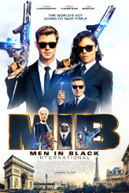
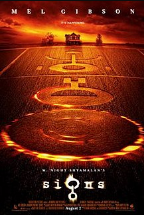

 Based off of the comic book. Unbeknownst to other people, there is a private agency code named MiB. This agency is some kind of extra terrestrial surveillance corporation. Then, one of the agency's finest men only going by the name "K" (Tommy Lee Jones) , is recruiting for a new addition to the agency. He has chosen James Edwards Will Smith) of the N.Y.P.D. Then, one day, a flying saucer crashes into Earth. This was an alien a part of the "Bug" race. He takes the body of a farmer (Vincent D'Onofrio) and heads to New York. He is searching for a super energy source called "The Galaxy". Now, Agents J and K must stop the bug before it can escape with the galaxy. Written by John Wiggins
 Jules Winnfield (Samuel L. Jackson) and Vincent Vega (John Travolta) are two hit men who are out to retrieve a suitcase stolen from their employer, mob boss Marsellus Wallace
(Ving Rhames). Wallace has also asked Vincent to take his wife Mia (Uma Thurman) out a few days later when Wallace himself will be out of town. Butch Coolidge (Bruce Willis)
is an aging boxer who is paid by Wallace to lose his fight. The lives of these seemingly unrelated people are woven together comprising of a series of funny,
bizarre and uncalled-for incidents. Written by Soumitra
Jules Winnfield (Samuel L. Jackson) and Vincent Vega (John Travolta) are two hit men who are out to retrieve a suitcase stolen from their employer, mob boss Marsellus Wallace
(Ving Rhames). Wallace has also asked Vincent to take his wife Mia (Uma Thurman) out a few days later when Wallace himself will be out of town. Butch Coolidge (Bruce Willis)
is an aging boxer who is paid by Wallace to lose his fight. The lives of these seemingly unrelated people are woven together comprising of a series of funny,
bizarre and uncalled-for incidents. Written by Soumitra
In a brand new Jumanji adventure, four high school kids discover an old video game console and are drawn into the game's jungle setting, literally becoming the adult avatars they chose. What they discover is that you don't just play Jumanji - you must survive it. To beat the game and return to the real world, they'll have to go on the most dangerous adventure of their lives, discover what Alan Parrish left 20 years ago, and change the way they think about themselves - or they'll be stuck in the game forever, to be played by others without break.
 Lance Preston and the crew of "Grave Encounters", a ghost-hunting reality television show, are shooting an episode inside the abandoned Collingwood Psychiatric Hospital,
where unexplained phenomena have been reported for years. All in the name of good television, they voluntarily lock themselves inside the building for the night and begin a
paranormal investigation, capturing everything on camera. They quickly realize that the building is more than just haunted - it is alive - and it has no intention of ever
letting them leave. They find themselves lost in a labyrinth maze of endless hallways and corridors, terrorized by the ghosts of the former patients. They soon begin to question
their own sanity, slipping deeper and deeper into the depths of madness, ultimately discovering the truth behind the hospital's dark past...and taping what turns out to be their
final episode.
Lance Preston and the crew of "Grave Encounters", a ghost-hunting reality television show, are shooting an episode inside the abandoned Collingwood Psychiatric Hospital,
where unexplained phenomena have been reported for years. All in the name of good television, they voluntarily lock themselves inside the building for the night and begin a
paranormal investigation, capturing everything on camera. They quickly realize that the building is more than just haunted - it is alive - and it has no intention of ever
letting them leave. They find themselves lost in a labyrinth maze of endless hallways and corridors, terrorized by the ghosts of the former patients. They soon begin to question
their own sanity, slipping deeper and deeper into the depths of madness, ultimately discovering the truth behind the hospital's dark past...and taping what turns out to be their
final episode.
 Preacher Graham Hess, played by Mel Gibson, has lost his faith in God after his wife dies in a brutal car accident. He along with his son and daughter and his brother Merrill lives in a farmhouse. Crop circles begin to appear in their corn fields which Graham dismisses as mischief by miscreants. After hearing strange noises and watching news coverage on crop circles appearing all over the world, the family grows suspicious of alien activities. Now they must stick together and believe, as a family to survive the ordeal and find a way to escape.